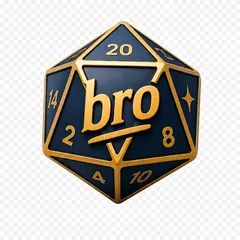

AFTER BEDTIME PROJECTS
Games and apps, made late at night.
I'm an indie developer — and above all, dad to a 3-year-old. Every project here is born in the evening hours, once the house goes quiet and the laptop becomes a personal arcade. Welcome to After Bedtime Projects.
Projects
Vita da DS
IN DEVELOPMENTA narrative football management game. Step into the shoes of a club's Direttore Sportivo (Sporting Director): your choices shape morale, reputation, and results, match after match.
Learn more
Broodle
LIVEA Doodle-style poll for planning your next game night with friends: pick dates, vote, play.
Learn moreWho's behind it
No team, no office: just a couple of free hours a night, once the house has finally fallen asleep.